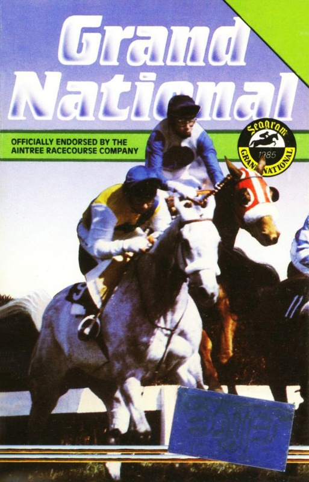
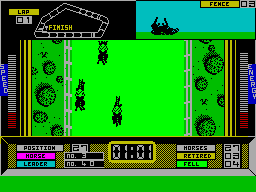

Grand National


{kind=link}

| Publisher: | Elite |
| Price: | £6.95 |
| Year: | 1985 |
| Source: | CRASH, Issue 16 |
Grand National follows hot on the heels of Elite's last effort The Dukes of Hazard. While there have been a few horse racing games on the market Grand National goes further by becoming more of a simulation — it lets you ride a horse round the most challenging course in the world, Aintree.

The first screen shows a list of the runners, their form and odds. Unless you opt not to bet, up to five horses may be selected from this list, unless of course they are shown as 'non runners'. You are expected to assess a horse's chances by considering the 'going', the form and the odds. The punter starts with an initial purse of £1000 and winnings from gambling or racing will add to this but any losses will be deducted. After your bets have been placed the amounts are shown against the nag of your choice, less 10% betting tax of course — who said computer games aren't realistic?
While the first page is being displayed the player can decide whether to go for one race only or try for a racing career. The latter option makes for a much more involved game.
Before the race proper the player must exercise the same judgement in picking a mount as he would in choosing a horse to back. After the selection has been made the screen changes to show a view of the course. The main part of the screen is taken up with a bird's eye non perspective view showing the part of the field occupied by your horse and its immediate neighbours. On the screen's top right is a profile shot of your mount, this view is very important as the jumping is one of the most difficult tasks that you will be expected to perform. In respect of these split screen graphics, Grand National resembles Show Jump from IMS and also the new World Series Baseball from Imagine. Your mount can be steered left and right and encouraged to go faster by using the whip key which must be applied 'decathlon' style.
Other information given would make a real jockey green with envy, for not only is there a map of the course complete with a tracking dot and fence indicator but the horse's energy and speed are given in bar graph form, one on each side of the screen. Even more information is provided at the base of the screen, the number or fellers, number of horses retired and total horses still running. You're even told the number of the leading horse and your own position in the field.
If you have ridden your race in an ungentlemanly manner, barging into other horses for example, you could face a steward's inquiry, this may only lead to a fine, but you could be banned which would do little for your career.
CRITICISM
'On the whole this game is a vast improvement on Elite's last release. The graphics are very good and the game, being more than just a betting game, offers more involvement. While on the subject of the graphics I think it fair to say that Elite found a good compromise, although you can only see a small section of the race at any one time you do get a good overall impression, any attempt to put more on the screen would have resulted in a loss of definition. I have a couple of small niggles, however. This game has no provision for each way bets; the method adopted for increasing the horse's speed is a little difficult to come to terms with, all riders know that the whip is an aid whereas the game requires the player to use the whip continuously in order to maintain speed. Such indiscriminate use would have a real jockey banned for life. Grand National is a substantial improvement over the last efforts ,one of the best to emerge from the Elite stable (sorry!). I would have thought this game was well worth considering.'
'Grand National is the first proper horse game that actually lets you control the horse rather than simply betting on them. The graphics are good and the colour is used well. Sound is very limited. When the game starts you have an option to bet on horses, but the actual race is the highlight of the game. It's a sort of decathlon type (don't get too worked up it results in a very raw horse.) The race part is very authentic, down to the steward's inquiry and resultant fines. Get ting round the course is not easy A; because of the infamous lumps and B; because of the other horses in your way. There is also a tactical element to Grand national, which horse do you go for? a good all rounder or a fast finisher, plus you have got the energy bar to keep an eye on. This is definitely the best horse race game around and for once Elite have put a good game be hind the graphics.'
'As usual Elite have produced smashing graphics but without much of a game. It has to be said that this is by the far the best horse racing type game. The graphics and animation are very realistic. The trouble with simulations are that you are placed in a real-time situation, and it seems to take ages to complete the course as you race round it. By the time you get to the home stretch, your hand is just drop ping off from pressing the key to go faster. At least this isn't just a racing simulation — you can bet as well. I thought Grand National was quite easy to win, for instance I achieved first placing on the first time I played the game. Although a different idea, I can't really see the point of the game, and I can't see it selling much apart to horse and racing fans. Still, the best horse racing simulation for the Spectrum.'
COMMENTS
| Control keys: | Z/X left/right, P to jump, and 0 to crack whip |
| Joystick: | None |
| Keyboard play: | Responsive but very tiring |
| Use of colour: | Suitably green, above average |
| Graphics: | Nice, smooth scrolling action, good horse animation |
| Sound: | Great tune that goes on a bit, can't interrupt it, no other sound |
| Skill levels: | 2 |
| Lives: | 1 |
| Screens: | Scrolling action |
| General rating: | Best horse racing simulation for Spectrum, mixed opinions on playability and addictive qualities. |
| Use of computer: | 60% |
| Graphics: | 85% |
| Playability: | 62% |
| Getting started: | 78% |
| Addictive qualities: | 72% |
| Value for money: | 70% |
| Overall: | 79% |